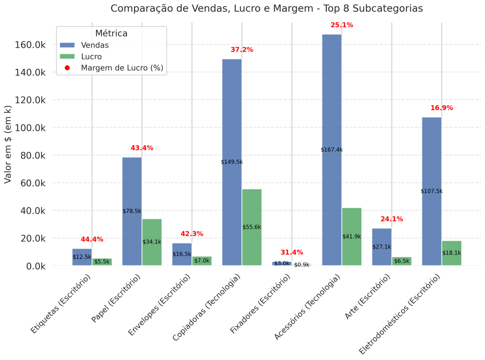
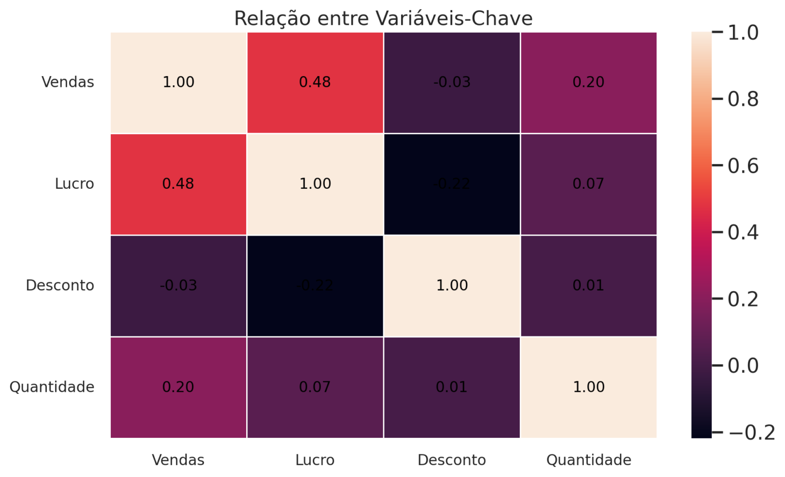
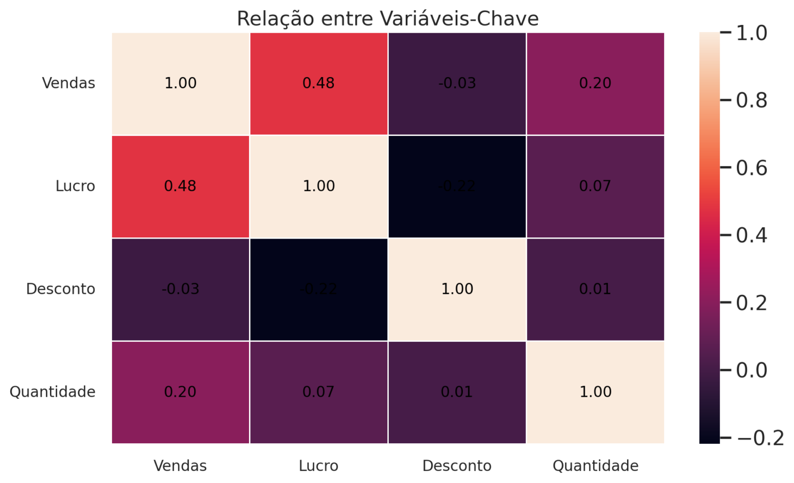
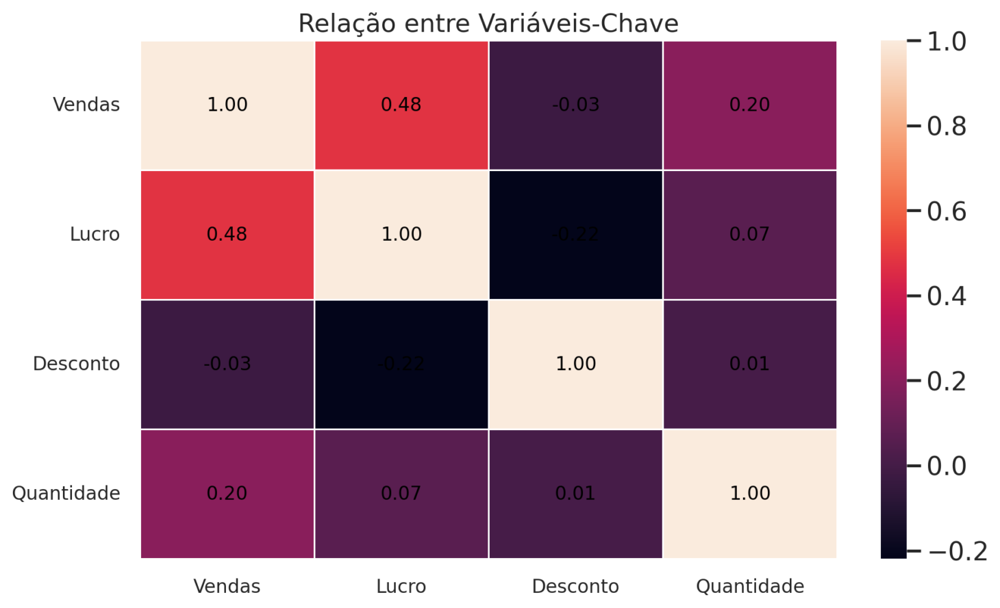

Introdução
Este dashboard analisa dados de um varejo fictício (Superstore), incluindo vendas, lucro, descontos e categorias de produtos. Os dados são estruturados com base em pedidos realizados, contendo informações detalhadas sobre transações, clientes e regiões.

 


Foco nas colunas utilizadas na análise e métricas:
- Vendas: em valor
- Lucro: Resultado financeiro líquido
- Margem de Lucro: Razão entre lucro e vendas
- Descontos: Impacto nas estratégias de preço
- Categorias e Subcat.: Segmentação dos produtos
Este dashboard fornece insights estratégicos para otimização das operações de varejo, tais como:
- Identificação de padrões de compra para melhorar a segmentação de clientes
- Análise da relação entre descontos e lucro
- Entendimento do desempenho de produtos (nível cat e subcat.)
- Avaliação geográfica das vendas
Informações do Projeto
- Categoria: Web design
- Cliente: ASU Company
- Data do Projeto: 01 March, 2020